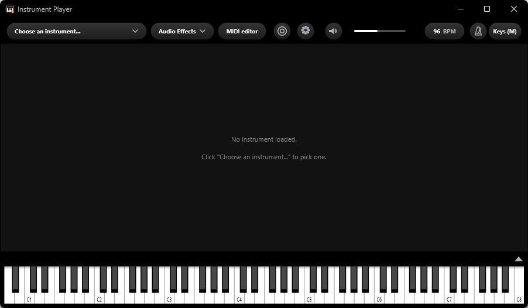
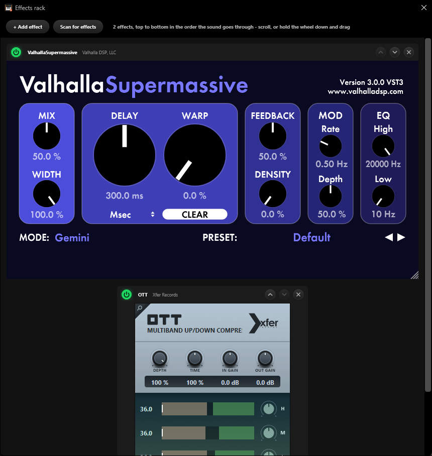
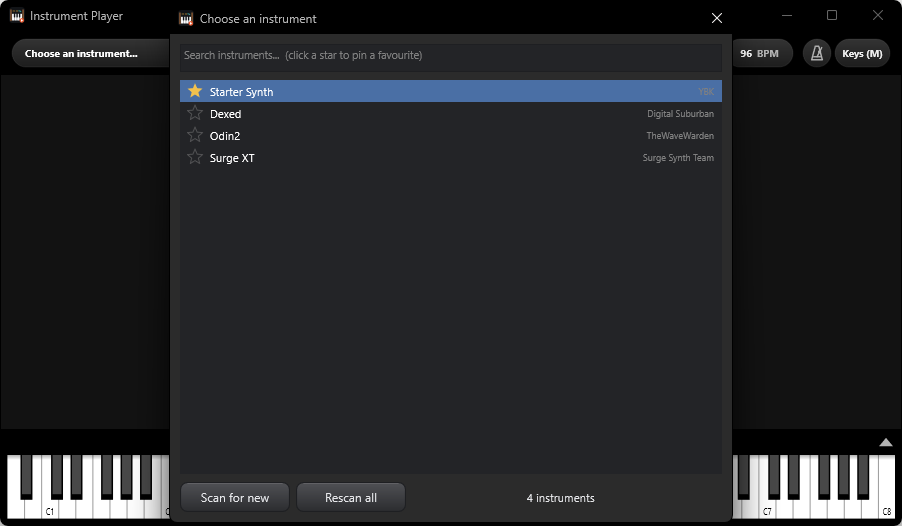
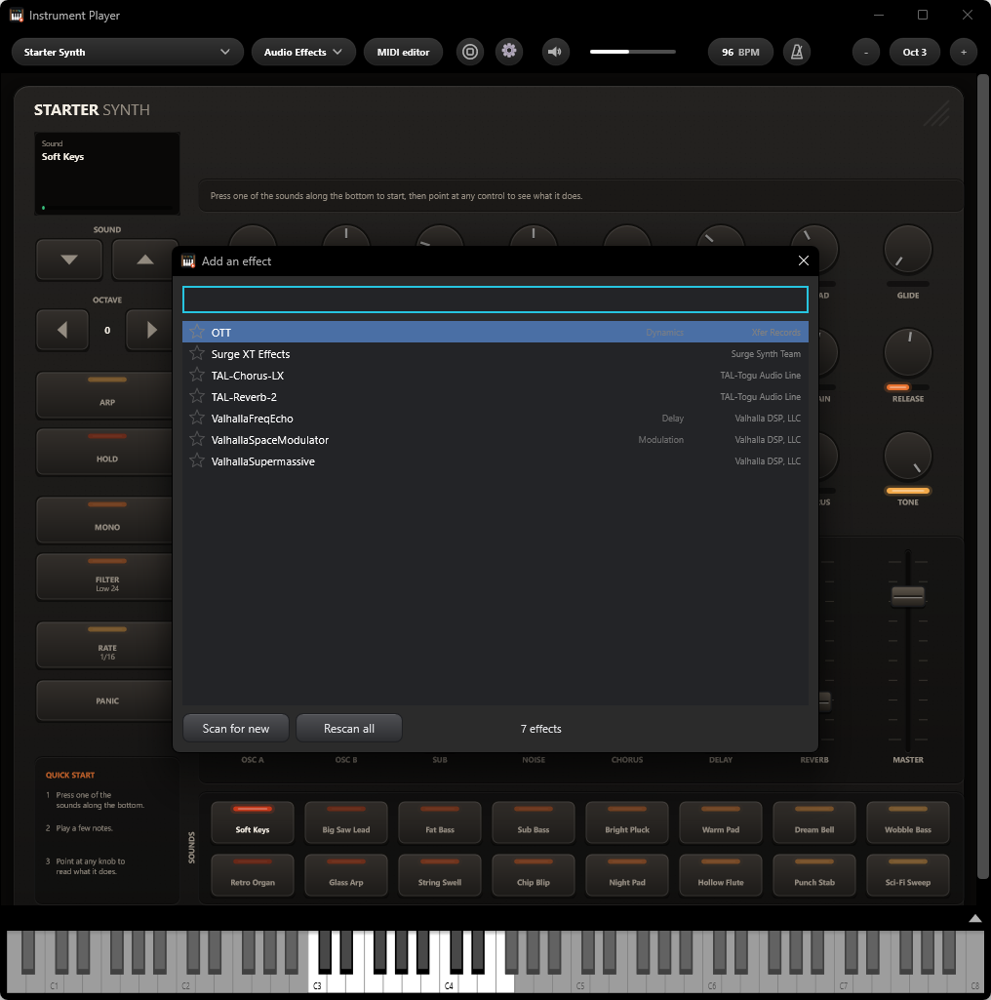
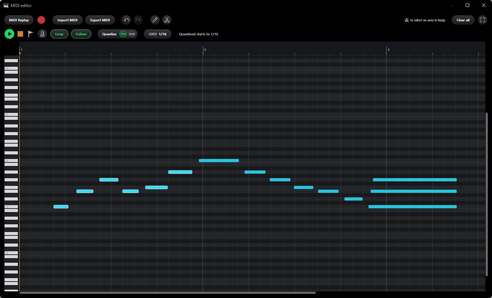
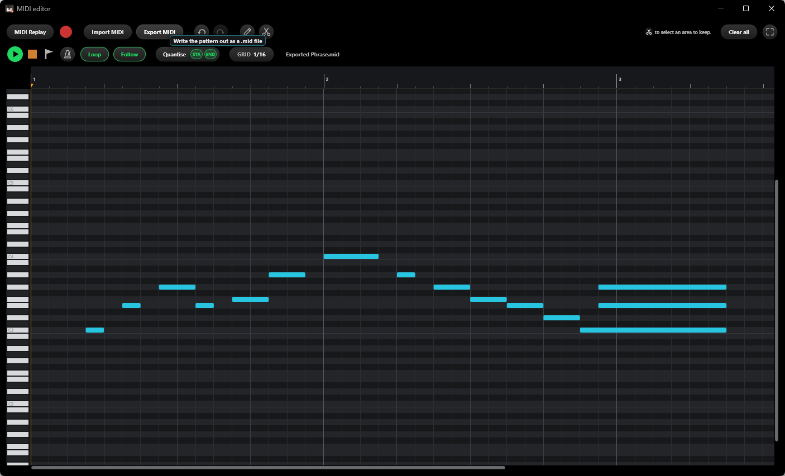
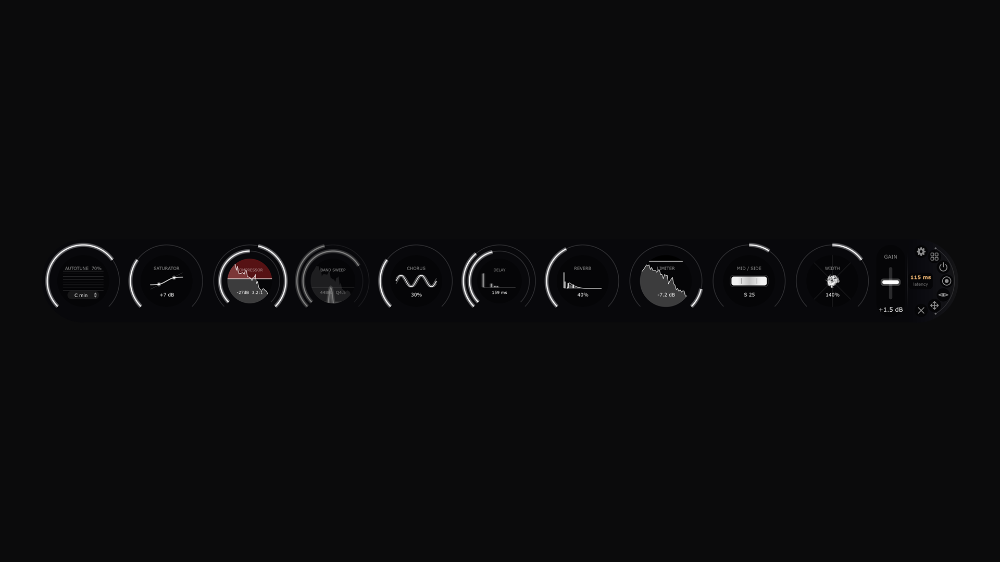
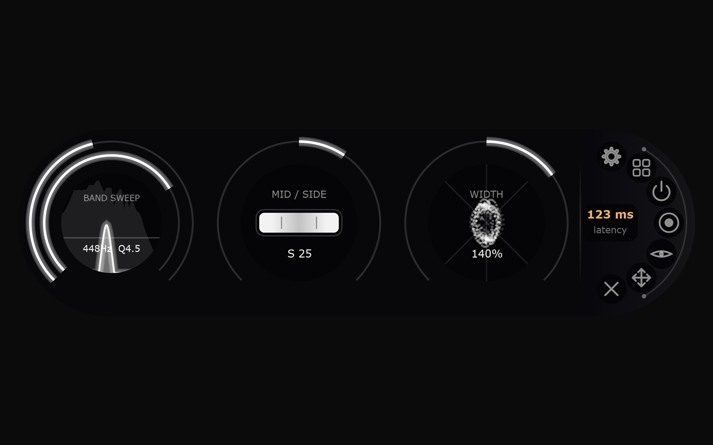
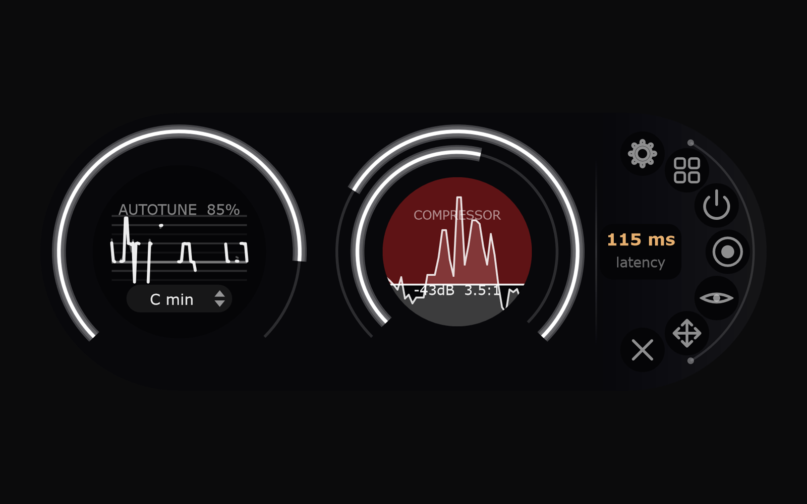
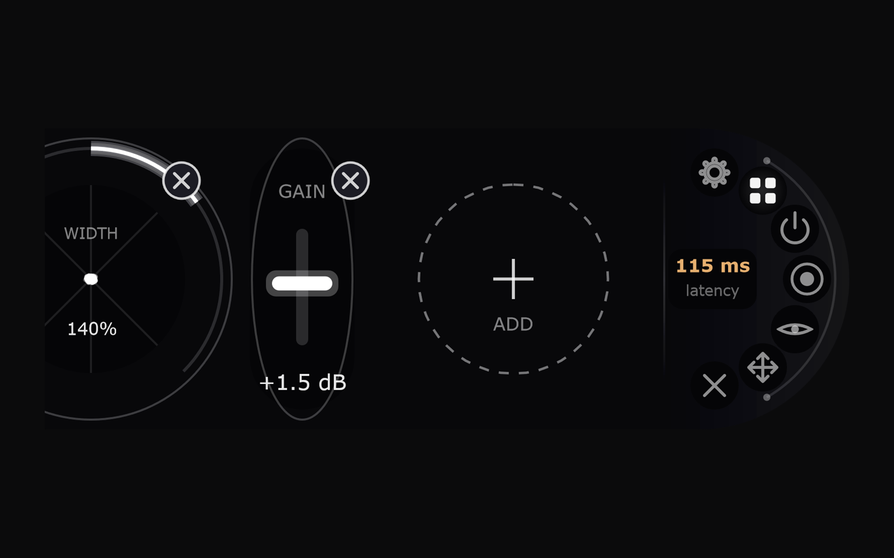

Music software
made simple.
Every tool a producer owns is trapped inside a DAW. Want to try an instrument? Boot the DAW. Want to check a mix in mono? Boot the DAW.
YBK Audio builds the small standalone apps that should have existed all along — they run on the desktop, simple and necessary.
- Platform
- Windows 10 & 11. Desktop applications that run on their own — no DAW required.
- Price
- $7–$12 per app. One single-use code per purchase — it activates one machine, once.
- Status
- Instrument Player is out now. Console and Beatmaker are in active development.
Console
Live mixing console for your PC audio.
Analyze and Experiment
Use our 11 knobs to hear what your audio output would sound like with a little touch. Autotune, Saturator, Compressor, Band Sweep, Chorus, Delay, Reverb, Limiter, Mid/Side, Width and Gain knobs are all available.
Make Your Own Effect Chain
Change the state and visibility of any knob and line them up the way you want. From live vocal mixing to sound analysis, Console awaits your touch.
Instrument Player
Load, Play, Recover, Edit, Export.
Instrument Player scans the VST3 instruments already installed on your machine and opens any one of them on its own — full interface, keyboard input, audio out, nothing else in the way.
And MIDI Replay keeps the last few minutes of your playing without pressing Record, so the phrase you stumbled into is still there — ready to edit and export as .mid.
Beatmaker
An easy-to-use DAW, just for beat design.
Pick a genre, press Generate, and get drums, bass, chords and melody built from the samples already on your PC — sorted for you, never moved.
Then keep changing it: shuffle sounds, regroove, swap chords, lock what works. Export audio, stems or MIDI when the idea lands.

Pay once
keep it.
One machine, once. Each purchase is a single-use code that activates one computer and expires the moment it does — no subscription, no seats, no transfers.
Hear it first.
Console and Beatmaker are still being built. Leave a note and you’ll get one email when they’re ready to buy — nothing else, ever.
Opens your mail app with the message ready to send.
Instrument Player
Open it, pick an instrument, play. Your VST3 instruments, without the DAW.
Free launch month
Instrument Player will be free for its first month, and anyone who claims it then keeps it for good.
Starts in
Free launch month
Get it free
For its first month, Instrument Player is free. Claim a license now and it’s yours to keep: it never expires, and every future update is free.
Free for another , then $10

Fig. 1 — Open it and pick an instrument Click to enlarge
Instrument Player runs the virtual instruments you already own as their own app. A lot of great synths only ship as plugins — so trying a sound or playing for five minutes means booting a DAW and making a track. Instrument Player removes the timeline, the tracks and the mixer, and keeps only the part you wanted: one instrument, ready to play.
It finds the VST3 instruments on your PC, shows the plugin’s own interface at exactly its size, and takes input from every MIDI controller you plug in — or from your computer keyboard.
And it never misses the take. MIDI Replay keeps the last few minutes of your playing in memory without you pressing Record, so the phrase you stumbled into can be pulled back, tidied up in the piano roll and exported as a .mid file for your DAW. What leaves the app is MIDI — the notes you played — not audio.
Every instrument, searchable
Scans your VST3 instruments into a searchable list and filters out effect plugins. Star favourites to pin them to the top. Scan only what’s new, or rescan everything.
Its own interface, its own size
The window fits the plugin exactly. Go full screen with F11 and plugins that can scale grow to fit without stretching; the rest stay sharp and centred.
Any controller, or your keyboard
Every connected MIDI input works at once, including ones plugged in while the app runs. Press M to play from your computer keyboard; Stop Notes silences anything stuck.
Nothing to arm, nothing to press
The last few minutes of playing are always kept in memory, so an idea is saved before you decide you wanted it. Record is there too, for when you mean it.
A proper piano roll
Tempo grid, quantise, copy, paste, duplicate, box select and zoom, plus BPM and a metronome. Export a standard .mid file — MIDI only, not audio — or load one and loop it while you shape the sound.
Same instrument, same sound
Your last instrument, its full patch state, your audio device and output volume come back exactly as they were next time you open the app.
A bad plugin can’t take it down
Scanning runs in a separate process, and an interrupted rescan keeps your existing list. Large sample libraries load in the background, so your PC stays usable.
Tight enough to perform
WASAPI exclusive mode runs at roughly 5–10 ms, set from the gear menu. Nothing is written to disk until you choose to save.
What you’ll need
Your own VST3 instruments — Instrument Player doesn’t include any sounds. Large sample libraries can take up to a minute to load the first time.





| Type | Standalone desktop application |
|---|---|
| Hosts | VST3 instruments installed on your system (effects are filtered out) |
| Plugin scan | Separate process · scan new only or rescan all · favourites |
| Input | All MIDI inputs, hot-plug · computer keyboard (M), Z/X for octaves |
| MIDI capture | MIDI Replay, always on · Record · piano-roll editor |
| Files | Export and import standard .mid — MIDI only, no audio recording or export |
| Audio | WASAPI shared or exclusive · DirectSound |
| Remembers | Last instrument and its patch, audio device, output volume |
| Platform | Windows 10 / 11 |
| Licence | Single-use — one code, one machine, expires on activation |
| Price | $10.00 — one-time, no subscription |
Buy Instrument Player
- The Windows installer, downloadable straight after payment
- One license code, emailed to the address you pay with
- One activation, on the computer you install it on
- Every update to version 1.x, at no extra cost
Free during the launch month. No payment, no card.
Payment is handled by Paddle.com, our Merchant of Record — YBK Audio never sees your card details. Instant delivery by email.
By purchasing you agree to the Terms.
Single-use license — please read. Your code authorises one computer and is spent the moment it activates online. It cannot be moved, reissued or used a second time, so moving to another machine means buying again. This is the trade that keeps it at $10 instead of $39.
Your license keeps working after
- Resetting or reinstalling Windows on the same computer
- Windows updates, driver updates and app updates
- Swapping the drive, RAM, graphics card or monitor
- Changing your network, Wi-Fi adapter or VPN
Your license ends if you
- Replace the motherboard
- Replace the CPU
- Move to a different computer
- Run the app inside a new virtual machine
The payment window didn’t open
Our payment provider’s checkout couldn’t load. This is usually an ad or tracker blocker, or a connection that dropped for a moment. Reload the page and press Purchase again.
Console
Studio effects on everything your PC plays, in real time.

Fig. 1 — Eleven live modules on one capsule Click to enlarge
Console is a small capsule that floats above every other window and runs your computer’s entire audio output through a chain of studio effects — YouTube, Spotify, games, the browser, anything. Autotune, saturation, compression, a band isolator, chorus, delay, reverb, a limiter, Mid/Side, stereo width and gain, all live, before the sound reaches your speakers or headphones.
Use it to study a reference: listen to only the mid, only the sides, or one narrow frequency band of any song you can stream. Or use it for fun: hard autotune a video, drown a stream in reverb, then hit Record and keep the result.
No DAW, no plugin host, no parameter pages. Almost every module is one knob — or one dial with two rings — and the knob’s centre shows you what it is doing while you turn it.
Every app, one place
Whatever is playing on your PC passes through the same chain, so one setting works on a song, a video and a game alike.
The details move with the knob
Turn up a compressor or a reverb and the ratio, make-up gain, room size and mix follow together. Every module starts neutral.
A live display in every knob
A spectrum, a stereo image, an echo timeline, a piano roll of corrected pitch — each knob’s dark centre shows its own effect as it happens.
Keep what you hear
One button records the final output to a 24-bit stereo WAV file on your computer, without dropouts.
Out of the way, never hidden
A pill-shaped window with adjustable background transparency, horizontal or vertical, that hides to the system tray.
Drag, remove, add back
Reorder the effect chain by dragging knobs on the capsule itself. A switched-off knob stays visible in grey, so its setting is never lost.
Smooth bypass and changes
Bypass the whole chain with a 20 ms crossfade and come straight back — every change ramps instead of popping.
The real delay, shown live
Driver input and output, buffer and module delay are added up and displayed on the capsule. Settings save automatically.
What you’ll need
A way to route system audio into the app: the free VB-Audio Virtual Cable, or an audio interface with a loop-back feature. Set Windows to play into the cable, then pick the cable as Console’s input and your real speakers as its output — the settings panel walks you through it.



| Autotune | Hard, glide-free snap to the nearest note in your key — Chromatic or any of 24 major and minor keys. Works on vocals and on full mixes; breath and texture are left alone. About 85 ms latency while on. |
|---|---|
| Saturator | Drive 0 to +24 dB with automatic level matching, so the texture changes and the volume doesn’t. 4× oversampled. |
| Compressor | Outer ring sets threshold (0 to −60 dB); inner ring raises ratio (1:1 to 10:1) and make-up gain together. Over-threshold energy glows red on a live spectrum. |
| Band Sweep | Hear only one band. Outer ring sweeps 20 Hz – 20 kHz, inner ring scales the width 0.25× – 4×. 48 dB/oct slopes on both sides, with automatic loudness make-up. |
| Chorus | One knob raises depth, speed and mix together. |
| Delay | Stereo echo. Outer ring sets echo level and repeats; inner ring sets the gap, 20 ms to 2 s. The centre flashes an echo timeline in time with the music. |
| Reverb | One knob grows the room size and the reverb level together. |
| Limiter | Brick-wall limiter. Turning up lowers the ceiling from 0 to −60 dB; it only reduces, never adds level back. |
| Mid/Side | −100 is mid only, 0 is untouched, +100 is side only. |
| Width | 0% mono, 100% untouched, 200% twice as wide — shown as a live stereo-image cloud. |
| Gain | −24 to +24 dB output fader. |
| Type | Standalone desktop application — not a plugin |
|---|---|
| Processes | All system audio, in real time |
| Modules | 11, reorderable, each with its own on/off |
| Recording | 24-bit stereo WAV of the final output |
| Latency | Shown live; depends on your driver and which modules are on |
| Presets | Save and load; current state saves automatically |
| Requires | Free VB-Audio Virtual Cable, or an interface with loop-back |
| Platform | Windows 10 / 11 |
| Licence | Single-use — one code, one machine, expires on activation |
| Price | $7.00 — one-time, no subscription |
Console pricing
- The Windows installer, downloadable straight after payment
- One license code, emailed to the address you pay with
- One activation, on the computer you install it on
- Every update to version 1.x, at no extra cost
Console is still being built, so it isn't for sale yet. There is no way to pay for it until it's finished.
Email me when it's outSingle-use license — please read. Your code authorises one computer and is spent the moment it activates online. It cannot be moved, reissued or used a second time, so moving to another machine means buying again. This is the trade that keeps it at $7 instead of $39.
Your license keeps working after
- Resetting or reinstalling Windows on the same computer
- Windows updates, driver updates and app updates
- Swapping the drive, RAM, graphics card or monitor
- Changing your audio interface, network or VPN
Your license ends if you
- Replace the motherboard
- Replace the CPU
- Move to a different computer
- Run the app inside a new virtual machine
Checkout is not open yet
Console is still in development, so there is nothing to sell you today — and this button is deliberately not wired to a payment page rather than taking your money for something unfinished.
Three things have to land before this button goes live:
- The app reaches a releasable build, code-signed with a Windows installer.
- A checkout provider is connected, so card details go to them and never to us.
- Licensing is switched on, so a purchase issues a single-use code that expires on activation.
Beatmaker
An easy-to-use DAW, just for beat design.
Fig. 1 — A full beat idea in one click Click to enlarge
Beatmaker is a sample-based idea DAW for beginners. Point it at the sample folders already on your PC, pick a genre and press Generate — drums, bass, chords and melody arrive together, ready to play.
It isn’t trying to be the program you finish a song in. It’s the one you start in. Shuffle the sounds, regroove the rhythm, swap the chords, add a fill, and keep pressing until something sticks. Lock the tracks you like and only the rest changes.
When the idea lands, export audio, stems or MIDI and carry on in the DAW you already use.
29 genres, one click
Boom bap to amapiano. Every genre has its own drum patterns, scales, named chord progressions, bass styles and fills.
The menu stays open
New beat, shuffle sounds, regroove, variation, humanize, fills, change chords — press them one after another until it’s right.
Every kick, found
Finds the sample folders on your drives and sorts one-shots into drum types and sound families. Your files are never moved or changed.
Patterns from your MIDI library
Studies the drum grooves you own for shared patterns, accents, swing and pocket, then uses them when it generates. The result stays on your PC.
Keep what already works
Locked tracks are skipped by every generate tool, while mute, solo, volume and pan still work.
Key, scale and chords
Detects the key, keeps bass and melody in scale, and moves every track to a new key with a single drag.
78 presets to start from
Three wavetable oscillators, filters, envelopes, LFOs and 808-style glide — bass, keys, leads, pads, plucks and more.
Audio, stems, MIDI, project
WAV, AIFF, FLAC or MP3, as one mix or one file per track — plus project files that carry their samples to another PC.
What you’ll need
Your own sounds. Beatmaker ships with no third-party samples — it builds beats from the one-shots, loops and MIDI grooves already on your computer. It opens in its own window using Microsoft Edge or Google Chrome, and MP3 export needs ffmpeg.


| Hip hop | Boom Bap · Trap · Drill · Lo-fi · Phonk · Jersey Club |
|---|---|
| R&B & pop | R&B · Pop · K-Pop · Synthwave · Future Bass |
| Band | Rock · Punk · Metal · Funk Break · Jazz · Blues & Country |
| Dance | House · Techno · UK Garage · Drum & Bass · Dubstep · Disco |
| Latin, Caribbean & African | Reggaeton · Dancehall · Reggae · Afrobeats · Amapiano · Baile Funk |
| Type | Standalone desktop application |
|---|---|
| Tracks | Rhythm · MIDI synth · Sampler · Audio |
| Generates | Drums, bass, chords, melody and fills |
| Patterns | 4/4, 1–8 bars |
| Export | WAV · AIFF · FLAC · MP3 · MIDI · stems · project file |
| Play in | Computer keyboard or MIDI keyboard |
| Requires | Your own samples · Microsoft Edge or Google Chrome · ffmpeg for MP3 |
| Platform | Windows 10 / 11 |
| Licence | Single-use — one code, one machine, expires on activation |
| Price | $12.00 — one-time, no subscription |
Beatmaker pricing
- The Windows app, downloadable straight after payment
- One license code, emailed to the address you pay with
- One activation, on the computer you install it on
- Every update to version 1.x, at no extra cost
Beatmaker is still being built, so it isn't for sale yet. There is no way to pay for it until it's finished.
Email me when it's outSingle-use license — please read. Your code authorises one computer and is spent the moment it activates online. It cannot be moved, reissued or used a second time, so moving to another machine means buying again. This is the trade that keeps it at $12 instead of $49.
Your license keeps working after
- Resetting or reinstalling Windows on the same computer
- Windows updates, driver updates and app updates
- Swapping the drive, RAM, graphics card or monitor
- Changing your audio interface, MIDI keyboard or network
Your license ends if you
- Replace the motherboard
- Replace the CPU
- Move to a different computer
- Run the app inside a new virtual machine
Checkout is not open yet
Beatmaker is still in development, so there is nothing to sell you today — and this button is deliberately not wired to a payment page rather than taking your money for something unfinished.
Three things have to land before this button goes live:
- The app reaches a releasable build, code-signed for Windows.
- A checkout provider is connected, so card details go to them and never to us.
- Licensing is switched on, so a purchase issues a single-use code that expires on activation.
Help
Installing, your license code, and how to reach us.
Seeing “Windows protected your PC”?
When you open the Instrument Player installer, Windows may show a blue box that says “Windows protected your PC” and “Unknown publisher”. That is Windows SmartScreen. It appears for new apps that aren’t signed with a code-signing certificate yet and haven’t built up a history with Microsoft. Instrument Player is new, and our certificate is still being issued, so for now Windows can’t tell who made it.
To install it anyway, click “More info”, then “Run anyway”. Only do this with the installer you downloaded from ybkaudio.com or from the link in our email.
This has nothing to do with your license. Your code only counts when you type it into the app. Seeing this warning, closing it, or downloading the installer again never uses up a license, so there is no need to ask for a new code.
Lost your license code?
Search your inbox for an email from license@ybkaudio.com. It has your code and the download link.
Got it free during the launch month? Enter the same email on the Instrument Player page again and we’ll send the same code again.
Bought it? Email us from the address you paid with and include the order number from your Paddle receipt.
How licenses work
- One-time purchase. You pay once. There is no subscription, and every update to the same version line is free.
- One license, one computer. A code activates the computer it is first entered on, and only that one.
- No transfers. A code can’t be moved to another computer, shared, resold or issued again. A new computer needs its own license.
- What it survives. Reinstalling Windows on the same computer, app updates, and swapping the drive, memory or graphics card. Replacing the motherboard or CPU counts as a new computer.
Contact
Questions, problems or feedback: write to us and we’ll reply within 3 business days. For anything about a purchase, include your order number.
Terms & Conditions
1. Who we are
These terms govern your purchase and use of software sold on ybkaudio.com. The seller is YBK Audio, a sole proprietorship registered in the Republic of Korea and owned by Kim Yeonbum — business registration number 288-17-02789, 221 Seolleung-ro, Gangnam-gu, Seoul, Republic of Korea. You can reach us at ybkaudio@gmail.com.
By buying, installing or using Instrument Player, Console or Beatmaker (“the Software”), you agree to these terms.
2. Payment and our reseller, Paddle
Our order process is conducted by our online reseller Paddle.com. Paddle.com is the Merchant of Record for all our orders: it processes your payment, charges and remits any sales tax or VAT, and issues your invoice. Your purchase is also subject to the Paddle Buyer Terms. YBK Audio never receives your card details.
Prices are shown in US dollars on each product page. Paddle may show the total in your local currency and add tax where required.
3. Your license
The Software is licensed, not sold. When your payment completes, you receive one license code by email. That code grants you a personal, non-exclusive, non-transferable right to install and use the Software on one computer.
- Single use. The code is spent the moment it activates a computer online. It cannot be reissued, moved to another computer, or used a second time.
- What keeps it working. Reinstalling or resetting Windows, Windows and driver updates, app updates, and replacing the drive, RAM, graphics card, monitor or network hardware on the same computer.
- What ends it. Replacing the motherboard or CPU, moving to a different computer, or running the Software inside a new virtual machine. Using the Software after that requires a new purchase.
- Activation. Activating needs an internet connection once. See the Privacy Policy for exactly what is sent.
You may use the Software for personal and commercial work. Music, recordings and MIDI files you make with it belong to you.
4. Updates
Your license includes every update within major version 1 (1.x) at no extra cost. A future major version, if one is released, may be sold separately. We may change or remove features in updates, but will not remove a product’s core function within version 1.
5. What you may not do
- Share, sell, rent or publish your license code or the Software.
- Circumvent, disable or tamper with license activation.
- Reverse engineer, decompile or disassemble the Software, except where the law expressly allows it despite this restriction.
- Use the Software to break the law or infringe anyone else’s rights.
6. Third-party plugins and audio
Instrument Player loads VST3 instruments made by other companies. Those plugins are governed by their own licenses, which you must hold separately; we are not responsible for how they behave. Console processes audio already playing on your computer; it records only when you press Record, saving the file to your own computer, and never transmits audio. Beatmaker reads the audio and MIDI files you point it at; it never moves, changes or uploads them.
7. Problems with an order
If something is wrong with your order, email ybkaudio@gmail.com with your order number and we will look into it. If a payment is reversed, the license code it paid for is deactivated.
8. Warranty
We build the Software carefully and will try to fix problems you report, but it is provided “as is”, without warranties of any kind beyond those that cannot be excluded by law. Check the system requirements on each product page before buying.
9. Limitation of liability
To the fullest extent permitted by law, YBK Audio is not liable for indirect or consequential losses — including lost data, lost work or lost profits — arising from use of the Software, and its total liability for any claim is limited to the amount you paid for the product concerned. Nothing in these terms limits liability that cannot legally be limited, such as for intentional misconduct or gross negligence.
10. Termination
Your license ends automatically if you break these terms. On termination you must stop using and uninstall the Software.
11. Governing law
These terms are governed by the laws of the Republic of Korea. If you buy as a consumer, you keep any mandatory protections given by the law of the country you live in, and nothing here removes your statutory rights.
12. Changes
We may update these terms. The version in force when you bought applies to that purchase; the date at the top of this page shows the latest revision.
Privacy Policy
Short version: we collect only what it takes to sell you a license and make it work on one computer. No analytics, no advertising trackers, no selling of data — ever.
1. Who is responsible
YBK Audio (sole proprietor Kim Yeonbum), 221 Seolleung-ro, Gangnam-gu, Seoul, Republic of Korea — business registration number 288-17-02789. Contact: ybkaudio@gmail.com.
2. What we collect and why
- When you buy. Paddle, our Merchant of Record, collects your name, email address, country, postal code where required, and payment details. Paddle keeps your card details; we never receive them. We receive your email address, the product bought, the order number and the amount, so we can deliver your license and keep sales records.
- When you claim a free launch license. Your email address is stored with your license code at our license service and added to our email list. We use it to send you a link that confirms the address is yours, then the code, one email about two weeks later asking how the Software is working for you, and a few short reminders before the free launch month ends. Every one of these emails has an unsubscribe link. If you choose to pay something through “name your price”, Paddle handles that payment as described above. Your IP address is kept for one hour to stop automated sign-ups.
- When your license is issued. Your email address, license code and order number are stored with our license service and used once to email you the code.
- When you activate the Software. The app sends your license code, a machine fingerprint, the app version, the Windows version and the activation time. Your IP address is visible to the license service as part of the connection. The fingerprint is a one-way code derived from your motherboard and CPU identifiers: it cannot be turned back into those identifiers and contains nothing about you, your files or your music. It exists only so a single-use license stays on one computer.
- When you email us. Your email address and whatever you choose to write, used to answer you.
- When you visit this website. We run no analytics and no advertising cookies. Our hosting provider and Google Fonts receive your IP address to serve the page, and Paddle’s checkout script may set cookies it needs for payment and fraud prevention.
The Software does not collect usage statistics, and Console never transmits the audio it processes — recordings you make are saved only on your own computer.
3. Legal basis
We process this data to perform our contract with you (selling and licensing the Software), to meet legal obligations (tax and consumer-protection record keeping), and in our legitimate interest in preventing license misuse. Where the law requires consent, we ask for it.
4. How long we keep it
- Records of contracts, payments and refunds: 5 years, as required by the Korean Act on Consumer Protection in Electronic Commerce.
- Records of complaints and disputes: 3 years, under the same act.
- License and activation records: for as long as the license exists, then up to 5 years alongside the sales record.
- Email list: until you unsubscribe. After that we keep only the fact that you unsubscribed, so we never email you again by mistake.
5. Who processes it, and where
We do not sell or rent personal data, and we do not share it for marketing. We use the following services to run the store. Because they are based outside Korea, your data is transferred abroad over the internet when you buy, receive a license, activate the Software or visit the site. You can refuse this by not purchasing; the Software cannot be sold or activated without it.
| Service | Country | Purpose | Data |
|---|---|---|---|
| Paddle.com Market Ltd | United Kingdom | Payment, tax, invoicing (Merchant of Record) | Name, email, country, payment details, order |
| Keygen | United States | Issuing and activating licenses | Email, license code, order number, machine fingerprint, app and Windows version, IP address |
| Resend | United States | Sending your license email, and the one follow-up email after a free launch claim | Email, license code |
| Cloudflare, Inc. | United States | Running the purchase-to-license automation and free launch sign-ups | Order data in transit, email, IP address (one hour) |
| GitHub, Inc. | United States | Hosting this website | IP address |
| Google LLC | United States | Serving website fonts | IP address |
Each service keeps data only as long as needed to provide its function to us, or as its own legal obligations require.
6. Your rights
You can ask us to show, correct, delete or stop processing your personal data, or to give you a copy of it. Email ybkaudio@gmail.com and we will reply within 10 days. Some records must be kept for the periods above even if you ask for deletion.
If you are unhappy with our answer, you can complain to the Personal Information Protection Commission of Korea (privacy.go.kr, call 118), or to the data-protection authority where you live.
7. Security
All data travels over encrypted connections. Access to the services above is restricted to YBK Audio and protected by secret keys that are never published.
8. Children
Our store is not directed at children under 14, and we do not knowingly collect their personal data.
9. Privacy officer
Kim Yeonbum, Representative — ybkaudio@gmail.com
10. Changes
If this policy changes, we will update the date at the top of this page. Significant changes will be announced on this website before they take effect.
Refund Policy
1. Problems with your order
If something is wrong with your purchase, email ybkaudio@gmail.com from the address you bought with. Include your order number from the Paddle receipt and tell us what happened. We read every message and reply within 3 business days.
2. How payments are reversed
Payments are handled by Paddle, our Merchant of Record, so any refund is issued by Paddle to your original payment method. When a payment is refunded, the license code it paid for is deactivated and the Software stops working on any computer where it was activated.
3. Your statutory rights
Nothing on this page limits any rights you have under consumer law — including the Korean Act on Consumer Protection in Electronic Commerce and, for buyers in the EU or UK, the statutory withdrawal right described in the Paddle Refund Policy.